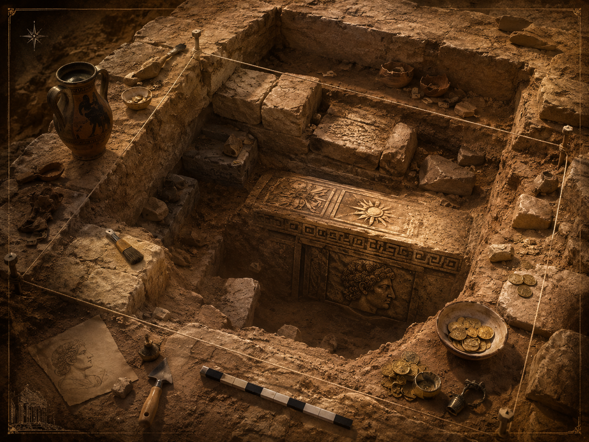

The Soma vanishes
In Alexandria, Alexander's tomb was known as the Soma. It was famous, royal, and visited by powerful rulers. Ancient writers and Roman emperors knew where it stood.
But Alexandria was transformed again and again by earthquakes, wars, rebuilding, and the slow pressure of time. Eventually the tomb disappeared from living memory.
